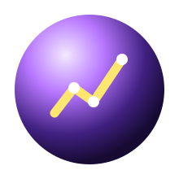

From Mess To Meaning
The data path is about learning how to ask questions of information. You might start with plain CSV files, then move into pandas, notebooks, charts, and eventually statistics or machine learning.
Things To Explore
- Read and write CSV files.
- Use pandas to filter, group, and summarize rows.
- Make basic charts to see patterns.
- Keep notes about what the data cannot tell you.
Mini mission: Make a small spending tracker from a CSV file, then group totals by category.